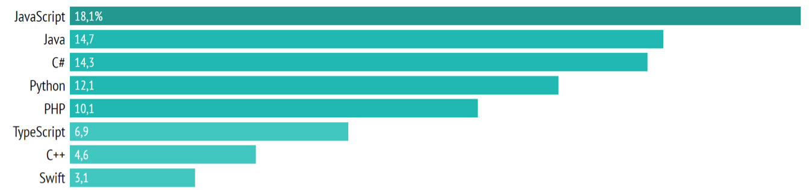
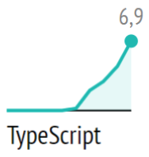

Little story about it, how to use it, advantages and disadvantages
Anders Hejlsberg - creator of TypeScript
Rating of programming languages in 2021
TypeScript rating
TypeScript or JavaScript?

TypeScript is JavaScript, but strongly typed
Why TypeScript?
- Catching errors at the development stage
- Supports OOP tools
- Faster and easier to write large code
Disadvantages of TypeScript
- Long development time
- Difficulties with libraries
Why developers like static typing?
function getSum(a: number, b: number): number {
return a + b
}
Where should you use TypeScript?
one-page site -
team project +